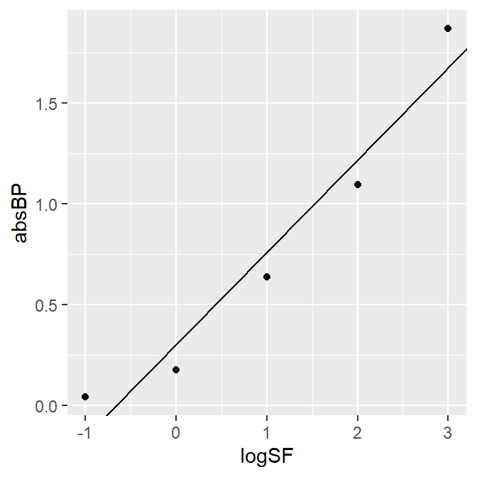
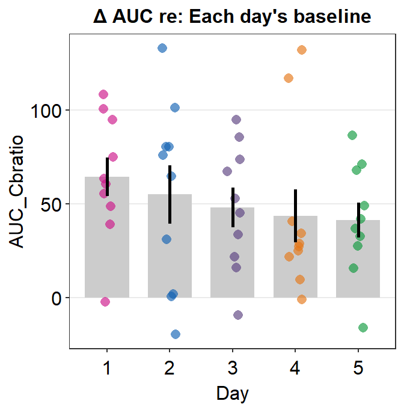
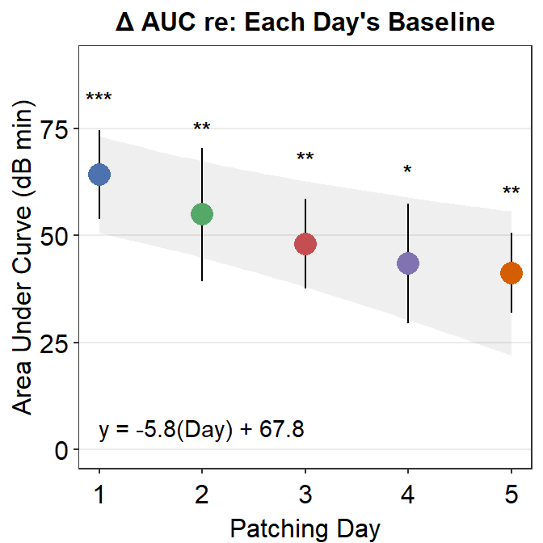

Chapter 10 Basic Statistics
As in the previous two chapters, we will continue to use data from this paper (PDF):
Seung Hyun Min, Alex S. Baldwin and Robert F. Hess. Ocular dominance plasticity: A binocular combination task finds no cumulative effect with repeated patching (2019). Vision Research, 161, 36-42.
Load the tidyverse and other libraries, and the csv file min2019b.csv using read_csv() from the tidyverse package.
library(tidyverse)
library(smplot2)
library(cowplot)
df <- read_csv('https://www.smin95.com/min2019b.csv')
head(df)## # A tibble: 6 x 4
## Subject Day Time Cbratio
## <chr> <dbl> <dbl> <dbl>
## 1 a 1 0 -0.421
## 2 b 1 0 2.82
## 3 c 1 0 1.69
## 4 d 1 0 2.55
## 5 e 1 0 -0.217
## 6 f 1 0 0.62610.1 One-sample t-test
One sample t-test compares the mean of a sample to a hypothesized mean (often 0).
For example, here is Figure 3E from the paper. What do the *** mean? How about ** and *? Let’s take a look.
## Rows: 51 Columns: 3
## -- Column specification --------------------------------------------------------
## Delimiter: ","
## dbl (3): x, y_mean, y_se
##
## i Use `spec()` to retrieve the full column specification for this data.
## i Specify the column types or set `show_col_types = FALSE` to quiet this message.
## Rows: 300 Columns: 4
## -- Column specification --------------------------------------------------------
## Delimiter: ","
## chr (1): Subject
## dbl (3): Day, Time, Cbratio
##
## i Use `spec()` to retrieve the full column specification for this data.
## i Specify the column types or set `show_col_types = FALSE` to quiet this message.
## sm_auc_list is deprecated. Use sm_auc_all instead.## [1] "AUC = Cbratio * Time"
For instance, to determine if the area under curve (changes in contrast balance ratio over time) after patching is significant, so much so that one can confidently say that it is different from 0, we can perform a one-sample t-test using t.test().
Let’s use data from the sampe paper. We import the data from online using read_csv() and store them into a variable (in this case, df). Then, we compute the area under a curve using sm_auc_list() and store the values in the variable auc_df.
df <- read_csv('https://www.smin95.com/min2019b.csv')
df$Day <- as.factor(df$Day)
auc_df <- sm_auc_list(subjects = 'Subject', conditions = 'Day',
x = 'Time', values = 'Cbratio',
data = df)## [1] "AUC = Cbratio * Time"head(auc_df)## Subject Day AUC_Cbratio
## 1 a 1 -2.36910
## 2 a 2 0.68265
## 3 a 3 -9.54795
## 4 a 4 27.12165
## 5 a 5 41.95680
## 6 b 1 60.52860The Day column of df has to be factored using as.factor() because Day here is a categorical, rather than, continuous variable.
To determine if the area under curve data on Day 1 were significantly different from 0, we could use one-sample t-test. First, let’s filter for data from only Day 1.
auc_df_day1 <- auc_df %>% filter(Day == 1)
auc_df_day1## Subject Day AUC_Cbratio
## 1 a 1 -2.36910
## 2 b 1 60.52860
## 3 c 1 94.84035
## 4 d 1 100.62510
## 5 e 1 55.32240
## 6 f 1 108.13770
## 7 g 1 63.27840
## 8 h 1 48.71625
## 9 u 1 39.11865
## 10 j 1 74.90610Then, lets extract the values from the AUC_Cbratio column and perform one-sample t-test using t.test().
t.test(auc_df_day1$AUC_Cbratio, mu = 0)##
## One Sample t-test
##
## data: auc_df_day1$AUC_Cbratio
## t = 6.1934, df = 9, p-value = 0.0001601
## alternative hypothesis: true mean is not equal to 0
## 95 percent confidence interval:
## 40.82072 87.80017
## sample estimates:
## mean of x
## 64.31045mu = 0 is included as an argument when performing one-sample t.test; this means an average of 0. In this case, you are comparing the data from auc_df_day1$AUC_Cbratio to mu = 0.
The p-value must be less than 0.05 to be considered statistically significant. It is labelled with one asterisk *. 0.001 < p < 0.01 is denoted with two asterisks **, and p < 0.001 is denoted with three asterisks ***. Since the p-value reported here is less than 0.001, Figure 3E has *** for Day 1’s area under a curve.
We can repeat this for Days 2-5. For brevity, we repeat the example with Days 2 and 4 only.
auc_df_day2 <- auc_df %>% filter(Day == 2)
t.test(auc_df_day2$AUC_Cbratio, mu = 0)##
## One Sample t-test
##
## data: auc_df_day2$AUC_Cbratio
## t = 3.5182, df = 9, p-value = 0.006534
## alternative hypothesis: true mean is not equal to 0
## 95 percent confidence interval:
## 19.60882 90.24161
## sample estimates:
## mean of x
## 54.92521The p value is 0.0065, which is less than 0.01 but larger than 0.001. In this case, the statistical significane is denoted as **. Likewise, Figure 3E shows the AUC of Day 2 with **.
auc_df_day4 <- auc_df %>% filter(Day == 4)
t.test(auc_df_day4$AUC_Cbratio, mu = 0)##
## One Sample t-test
##
## data: auc_df_day4$AUC_Cbratio
## t = 3.0973, df = 9, p-value = 0.01278
## alternative hypothesis: true mean is not equal to 0
## 95 percent confidence interval:
## 11.71639 75.19169
## sample estimates:
## mean of x
## 43.45404The p-value is 0.013, which is less than 0.05 but larger than 0.01. Therefore one asterisk * is used to label the statistical significance.
10.2 Two-sample t-test
A two-sample t-test is used to compare the mean of one sample to that of another sample.
For example, let’s compare changes in sensory eye dominance after short-term monocular deprivation in Day 1 vs Day 5. These values are shown in the Cbratio column.
Let’s filter only for AUC data from Days 1 and 5.
auc_df_day1 <- auc_df %>% filter(Day == 1)
auc_df_day5 <- auc_df %>% filter(Day == 5)
auc_df_day15 <- auc_df %>% filter(Day == 1 | Day == 5)Now, let’s plot a bar graph to display the AUC from Days 1 and 5 using sm_bar().
ggplot(data = auc_df_day15, mapping = aes(x = Day, y = AUC_Cbratio, color = Day)) +
sm_bar(shape = 21) +
scale_color_manual(values = sm_color('blue','orange')) +
ggtitle('AUC in Days 1 and 5')
There seems to be a difference in the AUC AUC_Cbratio between Days 1 and 5. The error bars (in this case, standard error) are barely overlapping. If the error bars are clearly overlapping, there is often no significant difference (p < 0.05) between the two data sets. If there is no overlap, it is highly likely that a statistical test will show a significant difference (p < 0.05). Let’s take a look using t-test using the function t.test().
t.test() allows us to compare whether data between two different groups are significantly different. Here, $ is used to extract data from a specific column within a data frame. You could type df_0min$, press the Tab button from the keyboard, and see what happens. Since we will only compare values in the AUC_Cbratio column, let’s select for the AUC_Cbratio column and use these values in our t.test().
t.test(auc_df_day1$AUC_Cbratio, auc_df_day5$AUC_Cbratio, paired = TRUE)##
## Paired t-test
##
## data: auc_df_day1$AUC_Cbratio and auc_df_day5$AUC_Cbratio
## t = 1.5694, df = 9, p-value = 0.151
## alternative hypothesis: true difference in means is not equal to 0
## 95 percent confidence interval:
## -10.17563 56.27723
## sample estimates:
## mean of the differences
## 23.0508In this case, the subjects are paired because the 10 subjects performed on both Days 1 and 5. If your data are not paired (ex. patients vs controls) and you want to perform a t-test, you can set paired = FALSE.
If we are reporting the results, we should report it as such, t(9) = 1.57, p = 0.15. The difference between Days 1 and 5 is not statistically significant.
10.2.1 Shapiro-Wilk Test to test for Normality of Data
T-test can only be used when the data assume normality. In other word, the data that are to be analyzed using t.test() must have a normal distribution (shown below).

Whether the data have a normal distribution can be checked using a Shaprio-Wilk test (shapiro.test()). If p > 0.05, then the data have a normal distribution, and therefore, t-test can be used to analyze the data. If p < 0.05, the data are not normally distributed, and t-test cannot be used.
For example, let’s check whether the AUC data from Day 1 have a normal distribution.
shapiro.test(auc_df_day1$AUC_Cbratio)##
## Shapiro-Wilk normality test
##
## data: auc_df_day1$AUC_Cbratio
## W = 0.95039, p-value = 0.6732P value is 0.67, which is larger than 0.05. Therefore, the AUCs from Day 1 have a normal distribution.
shapiro.test(auc_df_day5$AUC_Cbratio)##
## Shapiro-Wilk normality test
##
## data: auc_df_day5$AUC_Cbratio
## W = 0.97531, p-value = 0.9353P value is 0.935, which is larger than 0.05. Therefore, the AUCs from Day 5 have a normal distribution. More information about shapiro.test() can be found in this link: http://www.sthda.com/english/wiki/normality-test-in-r.
T-test is a type of parametric statistical test, which is used to analyze data that are normally distributed. If the data are not normally distributed, non-parametric statistical test can be used.
10.3 Wilcoxon Signed-rank Test
Wilcoxon Signed-rank Test is a non-parametric statistical test that is used instead of a t-test when the data are not normally distributed.
If Shaprio-Wilk test yields p < 0.05 for the following datasets, a Wilcoxon Signed Rank Test must be used for both one-sample and two-sample tests.
# one-sample Wilcoxon Signed-rank Test
wilcox.test(auc_df_day1$AUC_Cbratio, mu = 0)##
## Wilcoxon signed rank exact test
##
## data: auc_df_day1$AUC_Cbratio
## V = 54, p-value = 0.003906
## alternative hypothesis: true location is not equal to 0The p-value is 0.0039, which is less than 0.05. Therefore, according to the Wilcoxon test, the AUCs from Day 1 are significantly different from 0.
# two-sample Wilcoxon test
wilcox.test(auc_df_day1$AUC_Cbratio, auc_df_day5$AUC_Cbratio, paired = TRUE)##
## Wilcoxon signed rank exact test
##
## data: auc_df_day1$AUC_Cbratio and auc_df_day5$AUC_Cbratio
## V = 43, p-value = 0.1309
## alternative hypothesis: true location shift is not equal to 0The p-value is 0.13, which is larger than 0.05. Therefore, according to the Wilcoxon test, the AUCs from Days 1 and 5 are not significantly different.
10.4 Effect Size
However, even if p-value is larger than 0.05, this does not mean that there is no significant difference between the two groups/conditions. In fact, even a strong drug effect in a study that compares placebo vs. drug can result in p > 0.05 if the sample size is too small.
On the other hand, if a study is conducted with a very large sample size (1000 patients per group) to examine the effect of a very weak drug, the data between weak drug and control can give us a p < 0.05, which indicates a statistically significant difference.
In short, p-value is not everything because it depends on the sample size.
If the sample size is small, p-value can be larger than 0.05. But as the sample gets larger, p-value will decrease even if the mean difference between the two groups remains the same.
In this example, the sample size is not large (n=10). Therefore, one might ask whether our conclusion that there is no significant difference between Days 1 and 5 is truly valid. One might also believe that if our sample size was larger (ex. n=50), we would have found a significant difference between Days 1 and 5.
To respond to this concern, we might need to calculate the effect size. If the effect size is large, there is a large difference between the sample groups. Unlike the p-value, the effect size does not depend on the sample size.
One measure to capture the effect size is Cohen’s d. We can use sm_effsize() to calculate Cohen’s d as a measure for the effect size.
- Small effect size: Cohen’s d around 0.2
- Medium effect size: Cohen’s d around 0.5
- Large effect size: Cohen’s d > 0.8.
The inputs for sm_effsize() are the data of two sample groups, just as they were in t.test().
Let’s compute the effect size (Cohen’s d) using AUC data from Days 1 and 2.
sm_effsize(auc_df_day1$AUC_Cbratio, auc_df_day2$AUC_Cbratio)## [1] 0.2238542Cohen’s d equals 0.224, which is a very small effect size. This indicates that there is a very small difference in AUC between Days 1 and 2.
t.test(auc_df_day1$AUC_Cbratio, auc_df_day2$AUC_Cbratio,
paired = TRUE)##
## Paired t-test
##
## data: auc_df_day1$AUC_Cbratio and auc_df_day2$AUC_Cbratio
## t = 0.46312, df = 9, p-value = 0.6543
## alternative hypothesis: true difference in means is not equal to 0
## 95 percent confidence interval:
## -36.45777 55.22823
## sample estimates:
## mean of the differences
## 9.38523Also, it is recommended that both p-value and effect size are reported at all times. In this example, I would report the results as: t(9) = 0.46, p = 0.65, Cohen’s d = 0.22.
Let’s see what happens in the effect size and p-value from t-test if there are 1000 subjects.
auc_df_day1b <- do.call('rbind', replicate(100, auc_df_day1, simplify = FALSE))
auc_df_day1b$Subject <- paste0('S',1:1000)
head(auc_df_day1b, 30)## Subject Day AUC_Cbratio
## 1 S1 1 -2.36910
## 2 S2 1 60.52860
## 3 S3 1 94.84035
## 4 S4 1 100.62510
## 5 S5 1 55.32240
## 6 S6 1 108.13770
## 7 S7 1 63.27840
## 8 S8 1 48.71625
## 9 S9 1 39.11865
## 10 S10 1 74.90610
## 11 S11 1 -2.36910
## 12 S12 1 60.52860
## 13 S13 1 94.84035
## 14 S14 1 100.62510
## 15 S15 1 55.32240
## 16 S16 1 108.13770
## 17 S17 1 63.27840
## 18 S18 1 48.71625
## 19 S19 1 39.11865
## 20 S20 1 74.90610
## 21 S21 1 -2.36910
## 22 S22 1 60.52860
## 23 S23 1 94.84035
## 24 S24 1 100.62510
## 25 S25 1 55.32240
## 26 S26 1 108.13770
## 27 S27 1 63.27840
## 28 S28 1 48.71625
## 29 S29 1 39.11865
## 30 S30 1 74.90610We have replicated all the rows of the data frame auc_df_day1 by 100 times to create 1000 rows total (i.e., 1000 subjects).
auc_df_day2b <- do.call('rbind', replicate(100, auc_df_day2, simplify = FALSE))
auc_df_day2b$Subject <- paste0('S',1:1000)
head(auc_df_day2b, 30)## Subject Day AUC_Cbratio
## 1 S1 2 0.68265
## 2 S2 2 80.38215
## 3 S3 2 1.78695
## 4 S4 2 -19.60125
## 5 S5 2 132.99825
## 6 S6 2 31.14285
## 7 S7 2 80.24685
## 8 S8 2 75.98130
## 9 S9 2 64.56690
## 10 S10 2 101.06550
## 11 S11 2 0.68265
## 12 S12 2 80.38215
## 13 S13 2 1.78695
## 14 S14 2 -19.60125
## 15 S15 2 132.99825
## 16 S16 2 31.14285
## 17 S17 2 80.24685
## 18 S18 2 75.98130
## 19 S19 2 64.56690
## 20 S20 2 101.06550
## 21 S21 2 0.68265
## 22 S22 2 80.38215
## 23 S23 2 1.78695
## 24 S24 2 -19.60125
## 25 S25 2 132.99825
## 26 S26 2 31.14285
## 27 S27 2 80.24685
## 28 S28 2 75.98130
## 29 S29 2 64.56690
## 30 S30 2 101.06550We have replicated all the rows of the data frame auc_df_day2 by 100 times to create 1000 rows total (i.e., 1000 subjects).
sm_effsize(auc_df_day1b$AUC_Cbratio, auc_df_day2b$AUC_Cbratio)## [1] 0.2358451The effect size is 0.24. It has barely changed despite the significantly larger sample size.
t.test(auc_df_day1b$AUC_Cbratio, auc_df_day2b$AUC_Cbratio,
paired = T)##
## Paired t-test
##
## data: auc_df_day1b$AUC_Cbratio and auc_df_day2b$AUC_Cbratio
## t = 4.8793, df = 999, p-value = 1.239e-06
## alternative hypothesis: true difference in means is not equal to 0
## 95 percent confidence interval:
## 5.610696 13.159764
## sample estimates:
## mean of the differences
## 9.38523Now, the p-value is much less than 0.001, rather than staying at 0.65. Therefore, we can now observe that p-value is heavily affected by the sample size, whereas the effect size (Cohen’s d) does not. In short, as the sample size increases, the p-value decreases even if the effect size stays the same.
10.5 Power Analysis
We got p > 0.05 with our small sample size (n = 10). As we previously mentioned, we know that p-value gets smaller with an increasing sample size. Therefore, given the mean difference between two sample groups (i.e., same effect size), the p-value can change depending on the sample size. So, it is important to report both the p-value and the effect size.
So, one might be concerned with what would be the minimal sample size to detect a statistically significant difference between the two groups (Days 1 and 5). This can be achieved using power analysis. Note that p can always be less than 0.05 as long as the sample size meets the requirement (i.e., very large).
If the effect size was large but the data yielded p > 0.05, then we could predict that the minimal sample size from power analysis would be not large. If the effect size was small and the data yielded p > 0.05, as it was for my data, the minimal sample size to yield p < 0.05 would need to be very large.
If the minimal sample size from power analysis was not large (hence, large effect size), then one could conclude that I did not collect enough data and incorrectly concluded that there was no significant difference between the two groups. This would be so because if the sample size was larger, I would have gotten p < 0.05.
Power analysis can be performed using sm_power(). The inputs for sm_power() are data of two sample groups, just as they were in t.test().
sm_power(auc_df_day1b$AUC_Cbratio, auc_df_day2b$AUC_Cbratio,
paired = TRUE)##
## Paired t test power calculation
##
## n = 143.0411
## d = 0.2358451
## sig.level = 0.05
## power = 0.8
## alternative = two.sided
##
## NOTE: n is number of *pairs*According to our power analysis (significant level = 0.05, power = 80%), we would need about 143 subjects per group (n = 143.0411) for the p-value to reach below 0.05 and, therefore, for us to detect a statistically significant difference in AUCs between Days 1 and 2. In other words, the difference between Days 1 and 2 is very small. Also, the conclusion that there was no difference between the days seems to be valid even though the sample size is small.
10.6 One-way ANOVA
One-way analysis of variance (ANOVA) is used to compare the mean of multiple groups (2 groups or more). It can also be referred to as one-factor ANOVA. The data are separated into multiple groups based on one categorical variable (such as patching days, conditions or subject groups).
When one is comparing two groups, one-way ANOVA and two-sample t-test can yield the same results because both of these tests would compare two groups.
To do ANOVA, we will use rstatix package. Install the package if you have not done so.
install.packages('rstatix')library(tidyverse)
library(rstatix)Note: We will use rstatix to perform some statistical tests. However, both tidyverse and rstatix packages have the function called filter(). To use filter() from the tidyverse (or dplyr) package, as we have done so before, you will need to type dplyr::filter rather than filter instead to specify filter() from the dplyr package.
To perform ANOVA, we have to make some assumptions about the data:
Data should be normally distributed. This can be confirmed by using a Shapiro-Wilk test.
No outliers.
Homogeneity of variance. The variance of the data should be consistent as a function of the predictor (x-axis). This can be examined with the Levene’s test.
Observations should be independent: The data from one group should have no relationship with other data within the same group. In short, each observation should be unique and come from an unique individual.
Let’s investigate whether AUC data differ significantly across days (Days 1 to 5). To do so, we will need to perform one-way ANOVA where the factor is Day.
10.6.1 Check for Outliers
We will check for outliers in the auc_df data frame, which stores the results of AUCs. Since we will compare the AUCs across different days (factor: Day), we will group each observation (each row) of the data frame by Day. Next, we will use the function identify_outliers() from the rstatix package to see if there are any outliers in the data set.
auc_df %>% group_by(Day) %>%
identify_outliers(AUC_Cbratio)## # A tibble: 2 x 5
## Day Subject AUC_Cbratio is.outlier is.extreme
## <fct> <chr> <dbl> <lgl> <lgl>
## 1 4 f 117. TRUE TRUE
## 2 4 g 132. TRUE TRUEIn this case, we have 2 outliers of AUC data on Day 4. Since Figure 3E indicates that Day 4 is not outrageously different than the averaged AUCs of other days, I will infer that these 2 outliers do not significantly affect the data. Therefore, I will include these 2 outliers in my data analysis.
However, if your data set has too many outliers, then it might be inappropriate to proceed to one-way ANOVA.
Let’s visually confirm whether there are 2 outliers in the AUC data from Day 4 by plotting a boxplot using sm_boxplot().
auc_df %>% ggplot(mapping = aes(x = Day, y = AUC_Cbratio, color = Day)) +
sm_boxplot(alpha = 0.6,
point.params = list(size = 2.2)) +
scale_color_manual(values = sm_palette(5)) +
ggtitle('\u0394 AUC re: Each day\'s baseline')
We see that there are two orange points that reside outside the whiskers of the boxplot. Points that are outside the whiskers represent outliers. Therefore, we confirm visually that there are two outliers on Day 4, and no outliers on any other days.
10.6.2 Checking for Normality of Data
Rather than using shapiro.test(), we will be using shapiro_test() from the rstatix package because we will be sorting data (group_by() by Day) using the pipe %>%.
auc_df %>% group_by(Day) %>%
shapiro_test(AUC_Cbratio)## # A tibble: 5 x 4
## Day variable statistic p
## <fct> <chr> <dbl> <dbl>
## 1 1 AUC_Cbratio 0.950 0.673
## 2 2 AUC_Cbratio 0.944 0.599
## 3 3 AUC_Cbratio 0.977 0.947
## 4 4 AUC_Cbratio 0.770 0.00620
## 5 5 AUC_Cbratio 0.975 0.935In this data set, Days 1, 2, 3 and 5 have normally distributed data sets. However, the data from Day 4 do not seem to be normally distributed. This could because there are 2 outliers on Day 4. Since bulk of the data are normally distributed, I will use parametric method to analyze the data, i.e., one-way ANOVA. If most of your data are not normally distributed, then one-way ANOVA should not be used.
10.6.3 Checking the Assumption for Homogeneity of Variance
We can examine whether the variance of the response values (y values) is homogeneous using levene_test().
auc_df %>% levene_test(AUC_Cbratio ~ Day)## # A tibble: 1 x 4
## df1 df2 statistic p
## <int> <int> <dbl> <dbl>
## 1 4 45 0.638 0.638The Levene’s test shows that the p-value is 0.64, which is larger than 0.05. Therefore, we can assume that the variance is homogeneous across different days. Therefore, we can proceed to using ANOVA.
10.6.4 Computing One-way ANOVA
We perform one-way ANOVA by comparing whether AUC_Cbratio values significantly differ across Day. ~ (tilde) defines the relationship between dependent and independent variables. y = m*x + b can be described with ~ as y~x, where the value of x can affect the value of y. In the example below, it is written as AUC_Cbratio ~ Day because AUC_Cbratio (dependent variable) is affected by Day (independent variable).
res <- aov(formula = AUC_Cbratio ~ Day, data = auc_df)
summary(res)## Df Sum Sq Mean Sq F value Pr(>F)
## Day 4 3513 878.3 0.588 0.673
## Residuals 45 67191 1493.1aov() is used to perform analysis of variance. In this example, the result from aov() is stored in the variable res. The summary of the results can be displayed using the function summary().
The p-value is 0.67, which is larger than 0.05. This indicates that there is no significant difference across days in AUCs.
If your data show a p value less than 0.05, then you should proceed to the next step of performing post-hoc pairwise comparison tests.
10.6.5 Post-hoc Tests
If one-way ANOVA shows a significant difference (p < 0.05), then the reader should perform Tukey HSD post-hoc pairwise comparison (Honestly Significant Difference) tests to see which two specific groups vary significantly. In the example, I have saved the results in the variable res (short for results).
TukeyHSD(res)## Tukey multiple comparisons of means
## 95% family-wise confidence level
##
## Fit: aov(formula = AUC_Cbratio ~ Day, data = auc_df)
##
## $Day
## diff lwr upr p adj
## 2-1 -9.385230 -58.48783 39.71737 0.9822382
## 3-1 -16.267650 -65.37025 32.83495 0.8791429
## 4-1 -20.856405 -69.95900 28.24619 0.7473960
## 5-1 -23.050800 -72.15340 26.05180 0.6718799
## 3-2 -6.882420 -55.98502 42.22018 0.9945038
## 4-2 -11.471175 -60.57377 37.63142 0.9630859
## 5-2 -13.665570 -62.76817 35.43703 0.9319698
## 4-3 -4.588755 -53.69135 44.51384 0.9988648
## 5-3 -6.783150 -55.88575 42.31945 0.9948024
## 5-4 -2.194395 -51.29699 46.90820 0.9999390As expected from one-way ANOVA, which shows no significant difference across days, the post-hoc pairwise tests (Tukey HSD test) yield p-values higher than 0.05 between any combinations of two different days.
If one-way ANOVA yielded p < 0.05, then we could expect to see a p-value lower than 0.05 in the Tukey HSD post-hoc test. Therefore, when one-way ANOVA yields p > 0.05, it is not necessary to perform a pairwise post-hoc comparison (Tukey HSD) using the data set.
10.6.6 One-way Repeated Measures ANOVA
If the subjects are identical across the factor (ex. Day), then anova_test() (from the rstatix package) can be used to perform repeated measures ANOVA.
auc_df %>% anova_test(AUC_Cbratio ~ Day, wid = Subject,
within = Day)## Coefficient covariances computed by hccm()## ANOVA Table (type II tests)
##
## Effect DFn DFd F p p<.05 ges
## 1 Day 4 45 0.588 0.673 0.05wid is the column name containing individuals/subjects identifiers. It should be unique to each individual. within is an optional argument that contains within subject variable, which in this case is Day as the same subjects were tested across days.
If different subjects were tested on each day, then wid should be empty. In both occasions, the p-value is the same because the subject identifiers (ex. S1, S2) are unique to each subject. Therefore, R just recognizes that it should perform repeated measures ANOVA.
10.7 Two-way ANOVA
In a two-way ANOVA, the effects of two factors are examined. In our example, we will use the data set from the paper, and examine the effects of Day and Time, which is the time point after short-term monocular deprivation (minutes).
Since we will be investigating whether the effects of Day and Time as variables significantly affect the values of Cbratio, we need to convert the columns Day and Time of df as factor using as.factor().
df <- read_csv('https://www.smin95.com/min2019b.csv') ## Rows: 300 Columns: 4
## -- Column specification --------------------------------------------------------
## Delimiter: ","
## chr (1): Subject
## dbl (3): Day, Time, Cbratio
##
## i Use `spec()` to retrieve the full column specification for this data.
## i Specify the column types or set `show_col_types = FALSE` to quiet this message.df$Day <- as.factor(df$Day)
df$Time <- as.factor(df$Time)As before, let’s check for some of the assumptions that are required to perform ANOVA.
10.7.1 Identifying Outliers
df %>% group_by(Day, Time) %>%
identify_outliers(Cbratio)## # A tibble: 13 x 6
## Day Time Subject Cbratio is.outlier is.extreme
## <fct> <fct> <chr> <dbl> <lgl> <lgl>
## 1 1 12 f 3.43 TRUE FALSE
## 2 2 24 d -0.916 TRUE FALSE
## 3 2 24 e 5.20 TRUE TRUE
## 4 2 48 j 2.75 TRUE FALSE
## 5 3 24 b 2.79 TRUE FALSE
## 6 3 24 u -0.389 TRUE FALSE
## 7 4 0 f 7.47 TRUE FALSE
## 8 4 3 e 8.70 TRUE TRUE
## 9 4 6 f 2.38 TRUE FALSE
## 10 4 24 g 3.45 TRUE FALSE
## 11 4 48 e -2.37 TRUE FALSE
## 12 4 48 g 3.21 TRUE FALSE
## 13 5 6 d -2.88 TRUE TRUEWe observe that there are 13 outliers, 2 of which are considered to be extreme points. identify_outliers() pinpoint outliers based on the definition of boxplots. Outliers in boxplots can be ignored. However, extreme points can be considered to be slightly troublesome. In this example, 2 out of 230 (nrow(df)) observations seem to be extreme points. Therefore, the data set meets the requirement to be analyzed using two-way ANOVA.
10.7.2 Checking for Normality of Data
Let’s check for the normality of the data using shapiro_test() from the rstatix package for each Day and Time. To do so, we will have to group our data using group_by() for Day and Time.
df %>% group_by(Day, Time) %>%
shapiro_test(Cbratio)## # A tibble: 30 x 5
## Day Time variable statistic p
## <fct> <fct> <chr> <dbl> <dbl>
## 1 1 0 Cbratio 0.913 0.306
## 2 1 3 Cbratio 0.947 0.630
## 3 1 6 Cbratio 0.899 0.213
## 4 1 12 Cbratio 0.897 0.201
## 5 1 24 Cbratio 0.918 0.341
## 6 1 48 Cbratio 0.964 0.831
## 7 2 0 Cbratio 0.925 0.398
## 8 2 3 Cbratio 0.912 0.292
## 9 2 6 Cbratio 0.900 0.221
## 10 2 12 Cbratio 0.934 0.493
## # ... with 20 more rowsOnly the first 10 rows are shown. To view the entire results, store the results into a variable and use View().
res <- df %>% group_by(Day, Time) %>%
shapiro_test(Cbratio)View(res)sum(res$p < 0.05)## [1] 3We see that there are 3 p-values (out of 30 combinations of Day and Time) that are smaller than 0.05. Ideally, we would want all of them to have a p-value higher than 0.05 for the data to be considered as normally distributed. However, since most data seem to be normally distributed in our example, it is okay to proceed to use a two-way ANOVA, which is a parametric procedure.
10.7.3 Computing Two-way ANOVA
As before, let’s use aov() function to compute ANOVA.
res <- aov(formula = Cbratio ~ Day + Time + Day:Time,
data = df)
summary(res)## Df Sum Sq Mean Sq F value Pr(>F)
## Day 4 7.2 1.796 0.948 0.437
## Time 5 74.2 14.832 7.825 6.77e-07 ***
## Day:Time 20 18.4 0.921 0.486 0.971
## Residuals 270 511.8 1.896
## ---
## Signif. codes: 0 '***' 0.001 '**' 0.01 '*' 0.05 '.' 0.1 ' ' 1As before, we specify the formula using tilde (~); its left side is the dependent variable (Cbratio), and the right side includes the independent variables (or predictors, ex. Day and Time). + is used to add more independent variables in the model formula. Interaction between the effects of Day and Time should also be included by :.
Another way of writing the model formula is shown below. It uses * as a shortcut to include the effects of Day, Time and their interactions. Notice that the results of both ANOVAs are identical because the model formulas are the same.
res2 <- aov(formula = Cbratio ~ Day*Time, data = df)
summary(res2)## Df Sum Sq Mean Sq F value Pr(>F)
## Day 4 7.2 1.796 0.948 0.437
## Time 5 74.2 14.832 7.825 6.77e-07 ***
## Day:Time 20 18.4 0.921 0.486 0.971
## Residuals 270 511.8 1.896
## ---
## Signif. codes: 0 '***' 0.001 '**' 0.01 '*' 0.05 '.' 0.1 ' ' 1It appears that there is a statistically significant effect of Time, F(5, 270) = 7.83, p < 0.001. But the effect of Day seems to be not significant, F(4,270) = 0.49, p = 0.44. Also the effect of interaction between Day and Time is not significant, F(20,270) = 0.97, p > 0.05.
An interaction effect between A and B exists when the effect of factor A (ex. Day) is different at different levels of factor B (ex. Time). Let’s understand how the effect of interaction could affect the data.

We see that best-fit regression slopes of the green, red and purple lines are almost identical. This is because the factor Time affects Cbratio at different levels of the factor Day (i.e., different days). This suggests that the slope of decay (decrease in changes in Contrast balance ratio) over time is similar across days. In other words, the interaction effect between Time and Day is not significant (p < 0.05).
Conversely, if Time affects Cbratio differently across different days, we would see that the best-fit regression slopes would be different among days.
10.7.4 Post-hoc Test
The procedure for post-hoc analysis differs depending on whether the interaction effect is statistically significant (p < 0.05) or not (p > 0.05).
Post-hoc test should be performed when there is a significant main effect from one of the factors (ex. Time or Day) in the two-way ANOVA. If not, it should not be performed.
If there is a significant main effect but the interaction effect is not significant, only interpret the results of post-hoc analysis that are related to the main effects. For example, if Time was a significant main effect, we could analyze the data as following.
TukeyHSD(res, which = 'Time')## Tukey multiple comparisons of means
## 95% family-wise confidence level
##
## Fit: aov(formula = Cbratio ~ Day + Time + Day:Time, data = df)
##
## $Time
## diff lwr upr p adj
## 3-0 0.106096 -0.6842609 0.89645292 0.9988910
## 6-0 -0.378016 -1.1683729 0.41234092 0.7432954
## 12-0 -0.887696 -1.6780529 -0.09733908 0.0176431
## 24-0 -0.876150 -1.6665069 -0.08579308 0.0201057
## 48-0 -1.257262 -2.0476189 -0.46690508 0.0001098
## 6-3 -0.484112 -1.2744689 0.30624492 0.4946934
## 12-3 -0.993792 -1.7841489 -0.20343508 0.0048793
## 24-3 -0.982246 -1.7726029 -0.19188908 0.0056524
## 48-3 -1.363358 -2.1537149 -0.57300108 0.0000191
## 12-6 -0.509680 -1.3000369 0.28067692 0.4349141
## 24-6 -0.498134 -1.2884909 0.29222292 0.4616410
## 48-6 -0.879246 -1.6696029 -0.08888908 0.0194170
## 24-12 0.011546 -0.7788109 0.80190292 1.0000000
## 48-12 -0.369566 -1.1599229 0.42079092 0.7611911
## 48-24 -0.381112 -1.1714689 0.40924492 0.7366165If there is a significant interaction effect between Day and Time, we can examine how the effect of Time varies across different days.
df %>% group_by(Day) %>%
anova_test(Cbratio ~ Time, wid = Subject, within = Day) %>%
get_anova_table() %>%
adjust_pvalue(method = 'bonferroni')## Coefficient covariances computed by hccm()
## Coefficient covariances computed by hccm()
## Coefficient covariances computed by hccm()
## Coefficient covariances computed by hccm()
## Coefficient covariances computed by hccm()## # A tibble: 5 x 9
## Day Effect DFn DFd F p `p<.05` ges p.adj
## <dbl> <chr> <dbl> <dbl> <dbl> <dbl> <chr> <dbl> <dbl>
## 1 1 Time 1 58 3.73 0.058 "" 0.06 0.29
## 2 2 Time 1 58 5 0.029 "*" 0.079 0.145
## 3 3 Time 1 58 17.4 0.000104 "*" 0.23 0.00052
## 4 4 Time 1 58 3.96 0.051 "" 0.064 0.255
## 5 5 Time 1 58 6.9 0.011 "*" 0.106 0.055within refers to the within-subject factor, which in this case Day. If there are different subjects associated with each Day, then between argument can be filled instead of within in the anova_test() function.
It seems that the effect of Time is not statistically significant at different levels of the factor Day, except for Day 3. This means that the decrease of Cbratio over time does not differ significantly across most days. This (sort of) agrees with our results that the interaction effect is not statistically significant.
Let’s pretend that the interaction effect is still significant. If so, we can examine whether the second independent variable (Day in our case) differs across different levels of the first independent variable (Time in our example).
df %>% group_by(Time) %>%
anova_test(Cbratio ~ Day, wid = Subject, within = Time) %>%
get_anova_table() %>%
adjust_pvalue(method = 'bonferroni')## Coefficient covariances computed by hccm()
## Coefficient covariances computed by hccm()
## Coefficient covariances computed by hccm()
## Coefficient covariances computed by hccm()
## Coefficient covariances computed by hccm()
## Coefficient covariances computed by hccm()## # A tibble: 6 x 9
## Time Effect DFn DFd F p `p<.05` ges p.adj
## <dbl> <chr> <dbl> <dbl> <dbl> <dbl> <chr> <dbl> <dbl>
## 1 0 Day 1 48 0.36 0.551 "" 0.007 1
## 2 3 Day 1 48 1.10 0.3 "" 0.022 1
## 3 6 Day 1 48 7.88 0.007 "*" 0.141 0.042
## 4 12 Day 1 48 0.058 0.811 "" 0.001 1
## 5 24 Day 1 48 1.54 0.221 "" 0.031 1
## 6 48 Day 1 48 1.25 0.268 "" 0.025 1It seems that the effect of Day remains insignificant across all time points.
You may realize that this result from the above is strange. Indeed, it is inappropriate to report these two results because the interaction effect is not statistically significant. Therefore, it is more appropriate to just report the post-hoc analysis that is only concerned with the effect of Time.
TukeyHSD(res, which = 'Time')## Tukey multiple comparisons of means
## 95% family-wise confidence level
##
## Fit: aov(formula = Cbratio ~ Day + Time + Day:Time, data = df)
##
## $Time
## diff lwr upr p adj
## 3-0 0.106096 -0.6842609 0.89645292 0.9988910
## 6-0 -0.378016 -1.1683729 0.41234092 0.7432954
## 12-0 -0.887696 -1.6780529 -0.09733908 0.0176431
## 24-0 -0.876150 -1.6665069 -0.08579308 0.0201057
## 48-0 -1.257262 -2.0476189 -0.46690508 0.0001098
## 6-3 -0.484112 -1.2744689 0.30624492 0.4946934
## 12-3 -0.993792 -1.7841489 -0.20343508 0.0048793
## 24-3 -0.982246 -1.7726029 -0.19188908 0.0056524
## 48-3 -1.363358 -2.1537149 -0.57300108 0.0000191
## 12-6 -0.509680 -1.3000369 0.28067692 0.4349141
## 24-6 -0.498134 -1.2884909 0.29222292 0.4616410
## 48-6 -0.879246 -1.6696029 -0.08888908 0.0194170
## 24-12 0.011546 -0.7788109 0.80190292 1.0000000
## 48-12 -0.369566 -1.1599229 0.42079092 0.7611911
## 48-24 -0.381112 -1.1714689 0.40924492 0.736616510.8 Extra Resources
For detailed information about ANOVA in R, please check out this link: https://www.datanovia.com/en/lessons/anova-in-r/.
To learn more about performing statistical tests in R, please check out the book entitled YaRrr! The Pirate’s Guide to R by Nathaniel Phillips (https://bookdown.org/ndphillips/YaRrr/).